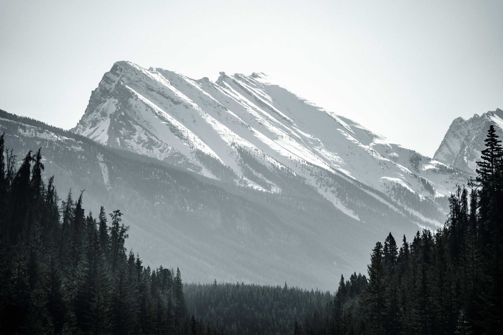
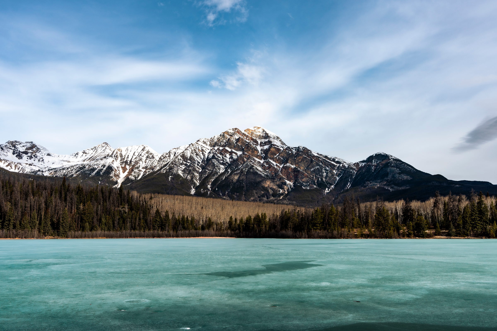
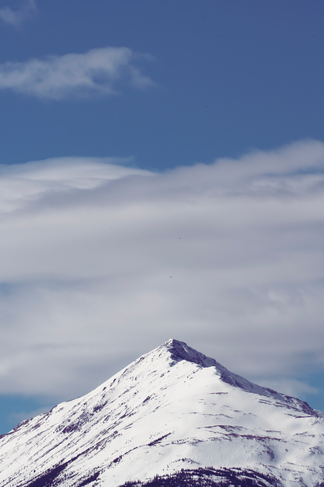
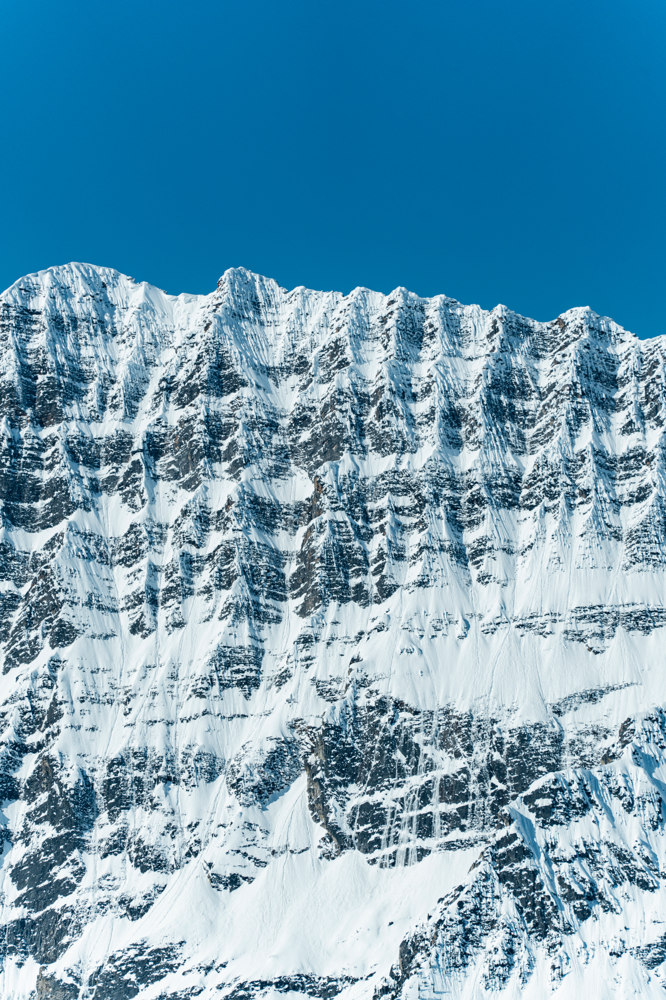
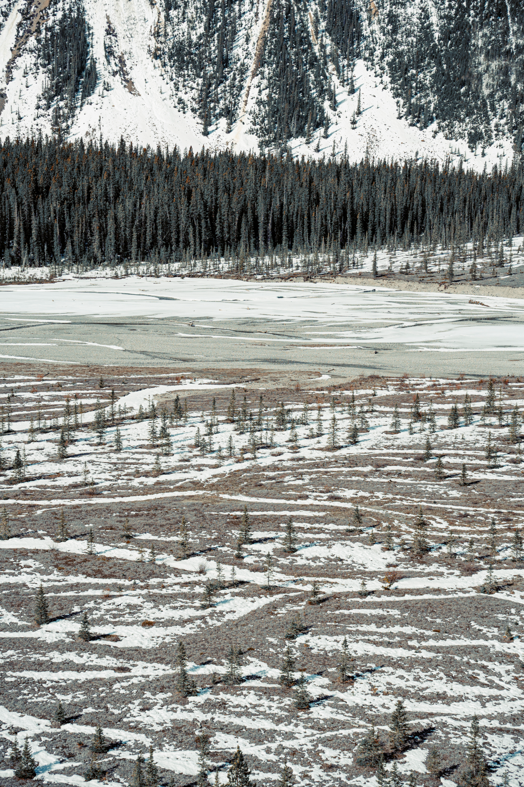

Rocky Mountains
Photographs from Banff and the surrounding Rocky Mountains. Scale, weather, and changing light organize a landscape that resists a single view.






Photographs from Banff and the surrounding Rocky Mountains. Scale, weather, and changing light organize a landscape that resists a single view.




